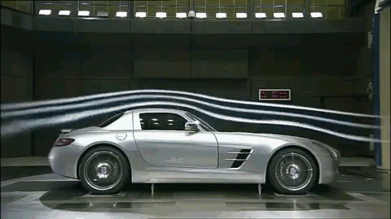
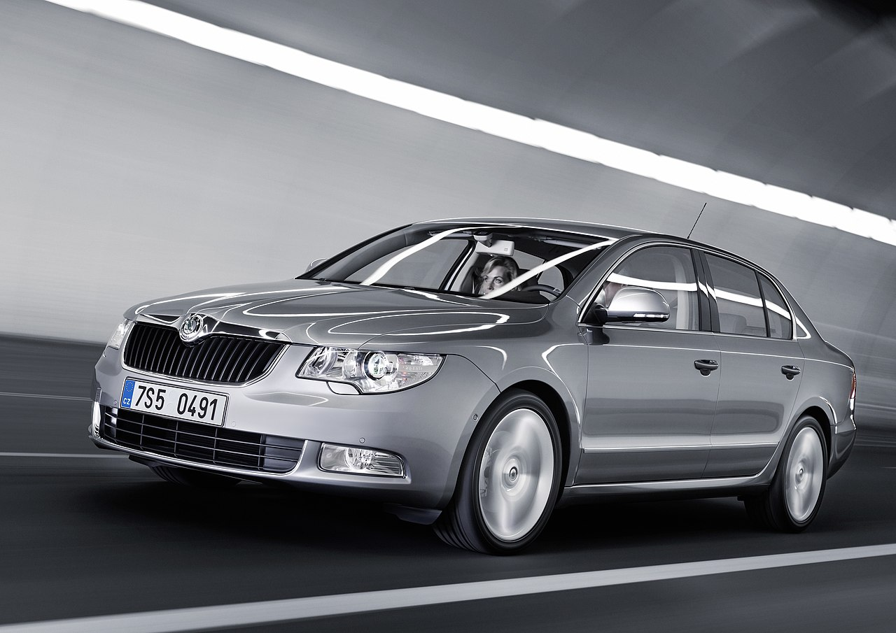
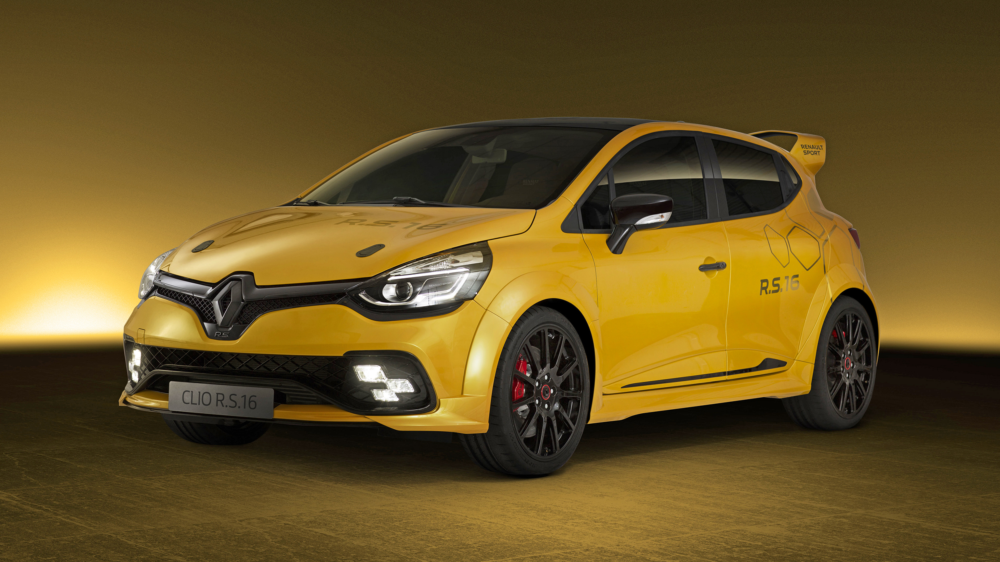
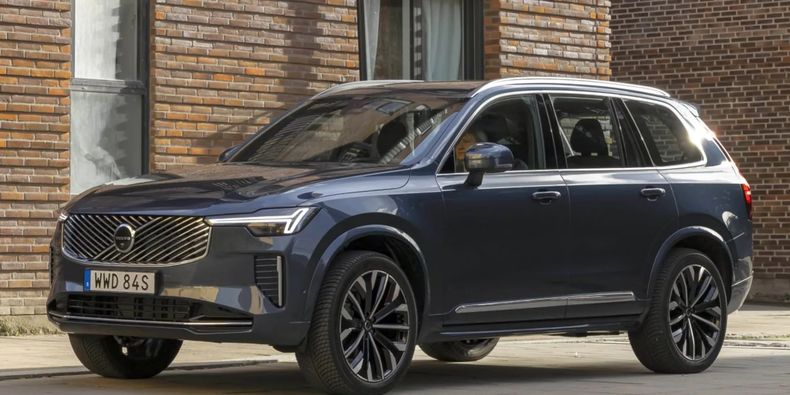
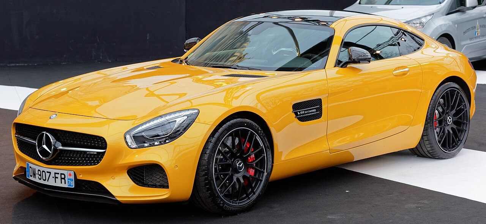
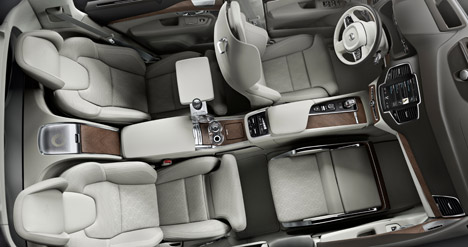

Caroseria: Design și Funcționalitate
Caroseria nu este doar „carapacea” exterioară a mașinii, ci un element ingineresc vital. Ea îndeplinește trei funcții majore:
- Aerodinamică: Reduce rezistența la înaintare pentru un consum mic și viteză mai mare.
- Siguranță: Include „zone de deformare controlată” care absorb energia unui impact pentru a proteja pasagerii.
- Estetică: Definește identitatea vizuală a mărcii și a modelului.

Principalele Tipuri de Caroserie

Sedan
3 volume distincte: motor, habitaclu și portbagaj separat.

Hatchback
2 volume, unde portbagajul face parte din habitaclu, accesibil prin hayon.

SUV
Gardă la sol ridicată și poziție înaltă la volan, ideal pentru teren variat.

Coupé
Accent pe sportivitate, de regulă cu 2 uși și o linie a plafonului plonjată.
Interiorul: Ergonomie și Confort
Habitaclul este spațiul unde utilizatorul interacționează direct cu vehiculul. Designul interior se concentrează pe ergonomie (dispunerea controalelor pentru a fi la îndemână) și pe insonorizare (reducerea zgomotului de rulare).
Materialele folosite variază de la materiale textile rezistente și plastice moi, până la piele naturală, Alcantara, inserții de lemn sau fibră de carbon în cazul mașinilor de lux sau sport.
